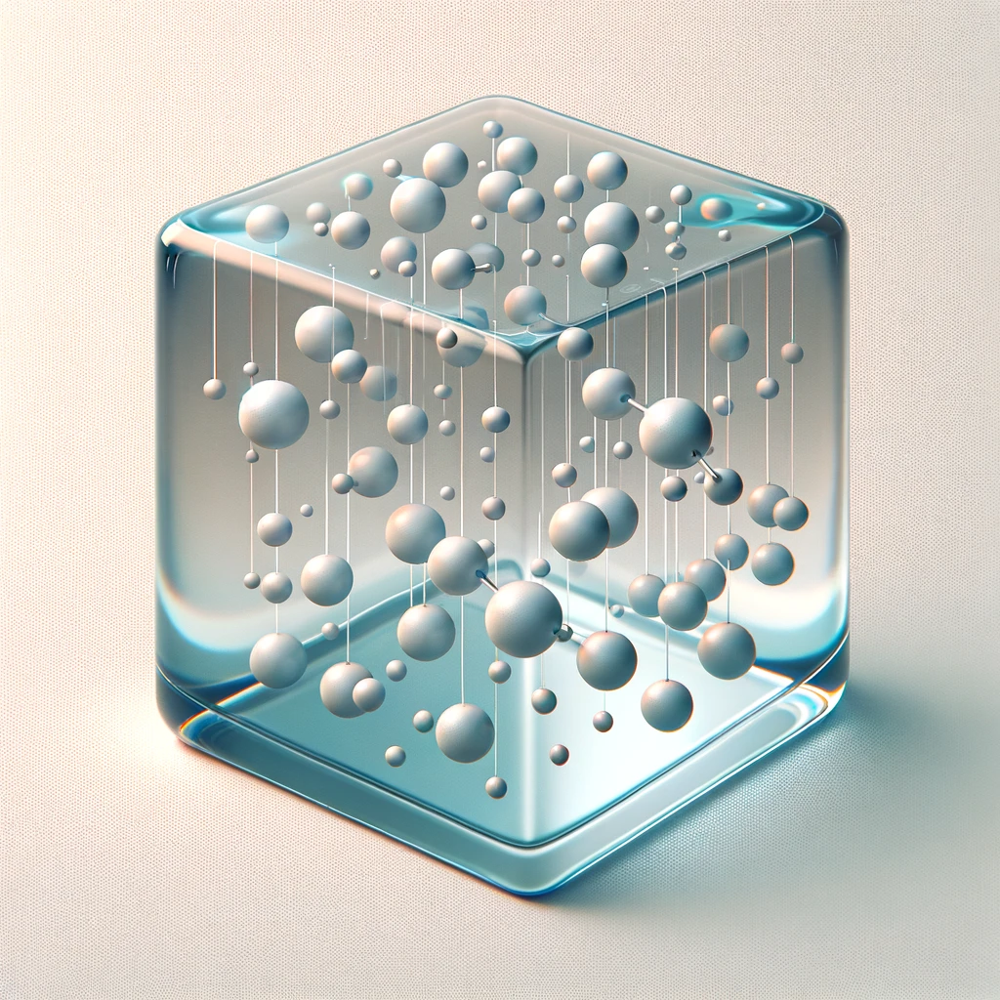

Free energy of ideal gas¶

Introduction¶
The thermodynamic properties of a gas can be estimated from its molecular vibration frequency under the ideal gas approximation. This is illustrated in the context of determining the translational, rotational, and vibrational contributions to the molar entropy and the molar specific heat of a gas.
The gibbs free energy \(G\) of a gas molecule is calculated by
the enthalpy \(H\), entropy \(S\) at given temperature \(T\) and pressure \(P\) can be calculated as follows.
Entropy¶
The entropy of gas can be expressed as
The contributions are from translational, rotational, vibrational, and electronic components, which leaves
where \(Q_{\text{trans}}\), \(Q_{\text{rot}}\), \(Q_{\text{vib}}\), \(Q_{\text{ele}}\) are the translational, rotational, vibrational, and electronic partition function.
It can also be divided as
which are the translational, rotational, vibrational, and electronic contributions.
Enthalpy¶
The enthalpy is derived from the partition function.
The internal can also be divided as translational, rotational, vibrational (including zero-point-energy \(E_{\text{ZPE}}\)), and electronic contributions.
The enthalpy \(H\) of the gas is expressed by the internal energy \(E\)
It can also be expressed as
where \(C_P = \left(\frac{\partial H}{\partial T}\right)_P\) and \(C_V = \left(\frac{\partial E}{\partial T}\right)_V\). \(C_P\) can be expressed as
where \(C_V\) is the "constant-volume" heat capacity. \(C_{V, \text{trans}}\), \(C_{V, \text{rot}}\), \(C_{V, \text{vib}}\), and \(C_{V, \text{ele}}\) are the translational, rotational, vibrational, and electronic contributions to the heat capacity, respectively. For the ideal gas, the difference between \(C_P\) and \(C_V\) is a constant:
Translational contributions¶
The translational partition function from the Sackur-Tetrode equation is
where V is the volume.
For an ideal gas molecule, based on \(PV = k_BT\), the equation can be rewritten. The translational partition function is used to calculate the translational entropy (which includes the factor of \(e\) which comes from Stirling’s approximation):
Its contribution to \(E\) is
Rotational contributions¶
For a monatomic molecule, the partition function is
For a linear molecule,
where \(I_r\) is the moment of inertia of the molecule along the direction that perpendicular to the axis of molecule, and \(\sigma\) is the symmetry number, which is determined from the point group of the molecule.
For a nonlinear molecule,
where \(I_A\), \(I_B\), and \(I_C\) correspond to the three principal moments of rotational inertia with respect to three perpendicular axes.
| Point Groups | Symmetry Numbers |
|---|---|
| \(C_1\), \(C_i\), \(C_s\) | 1 |
| \(C_2\), \(C_{2v}\), \(C_{2h}\) | 2 |
| \(C_3\), \(C_{3v}\), \(C_{3h}\) | 3 |
| \(C_4\), \(C_{4v}\), \(C_{4h}\) | 4 |
| \(C_6\), \(C_{6v}\), \(C_{6h}\) | 6 |
| \(D_2\), \(D_{2d}\), \(D_{2h}\) | 4 |
| \(D_3\), \(D_{3d}\), \(D_{3h}\) | 6 |
| \(D_4\), \(D_{4d}\), \(D_{4h}\) | 8 |
| \(D_6\), \(D_{6d}\), \(D_{6h}\) | 12 |
| \(S_6\) | 3 |
| \(C_{\infty}\) | 1 |
| \(D_{\infty h}\) | 2 |
| \(T\), \(T_d\) | 12 |
| \(O_h\) | 24 |
Its contribution to \(S\) is
Its contribution to \(E\) is
Vibrational contributions¶
Only the real modes (\(3n_{\text{atoms}} −6\) for non-linear molecules or \(n_{\text{atoms}} −5\) for linear molecules) should be considered; modes with imaginary frequencies are ignored.
If we choose the zero reference point to be the bottom of the well, the partition function is
On the other hand, if you choose the first vibrational energy level to be the zero of energy, the partition function is
Independent to the forms of the partition functions, its contribution to \(S\) is
If we choose the zero reference point to be the bottom of the well, the contribution to \(E\) is
if you choose the first vibrational energy level to be the zero of energy, the contribution to \(E\) is
Since the contribution to \(E\) should be independent to the forms of the partition functions
Electronic contributions¶
The partition function of electronic contribution is
where \(\omega_i\) the the degeneracy of the energy level, \(\epsilon_i\) is the energy of the n-th level.
We can assume that the first electronic excitation energy is much greater than \(k_B T\). Hence,the first and higher excited states are assumed to be inaccessible at any temperature. Further, the energy of the ground state is assumed to be zero. These assumptions simplify the electronic partition function to:
which is simply the electronic spin multiplicity of the molecule (the number of unpaired electron \(2n_{\text{spin}}\) + 1).
Its contribution to entropy is
Since the partition function is not a temperature dependent term, the electronic heat capacity and the internal thermal energy due to electronic motion are both zero
Reference¶
[1] Ochterski, Joseph W. "Thermochemistry in gaussian." Gaussian Inc 1 (2000): 1-19.